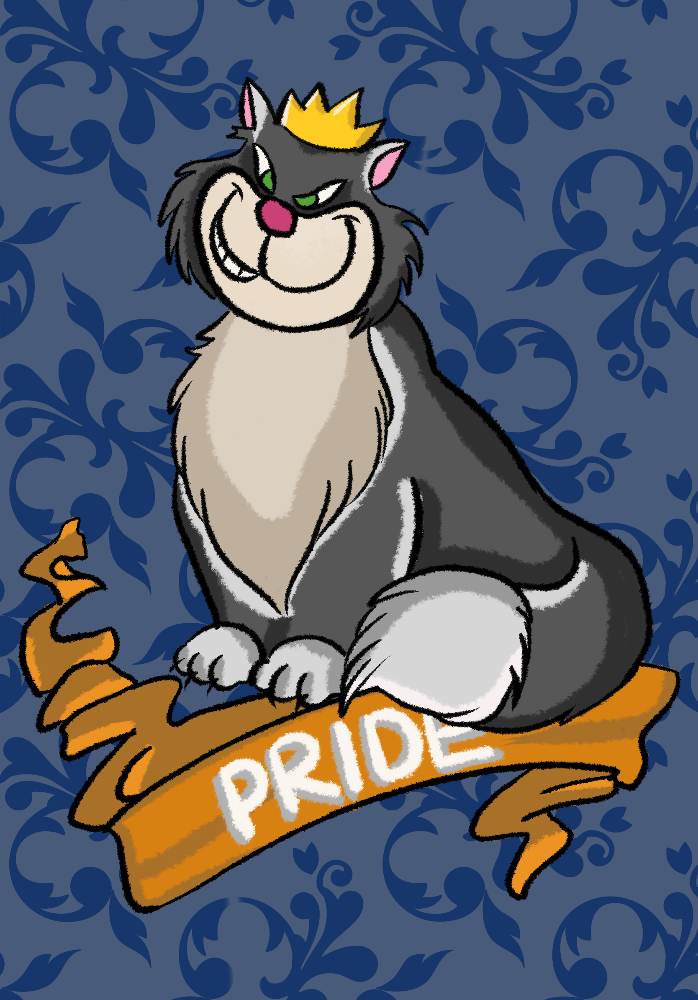

2021
Seven Deadly Sins is a digital art project that portraits the seven vices that spur other sins and further immoral behavior in a form of animals. For this project, I chose some of the creatures that symbolize the seven vices and make illustrations of them. There are seven drawings of the snake, the pig, the cat, the nine-tailed fox, the octopus, the sloth, and the lion describing Envy, Gluttony, Pride, Lust, Greed, Sloth, Wrath accordingly. All of the creatures will also have some factors that are connected with the sins.